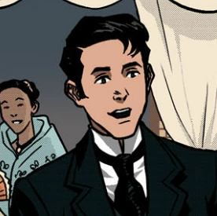

Main Characters |
| Image |
Name |
Description |
|  |
Crisostomo Ibarra |
- Juan Crisostomo Ibarra y Magsalin
- A young & wealthy mestizo
- Son of Don Rafael Ibarra
- Studied in Euroupe for 7 years, returned due to the passing of his father
- The fiance of Maria Clara
- Read More
|
 |
Maria Clara |
- Maria Clara de los Santos
- A young, beautiful woman with a high social status
- Daughter of Capitan Tiago and Dona Pia Alba
- Her Godfather is Padre Damaso, in truth he is Maria Clara's real father
- Fiance of Ibarra
- Read More
|
 |
Padre Damaso |
- He had alot of power and he tends to abuse it
- Was the padre/priest of San Diego until he was replaced by Padre Salvi
- Was said to be the godfather of Maria Clara
- Real father of Maria Clara
- Read More
|
 |
Kapitan Tiago |
- A rich Filipino with alot of power
- Adpotive father of Maria Clara
- Gobernadorcillo of the Mestiso's (Filipino's with a different race)
- Husband of Pia Alba
- Read More
|
 |
Elias |
- He was a fugitive living in San Diego
- Dealt with alot of trajedies
- Trying to improve society
- Was saved by Crisostomo Ibarra, he returned the favor on numerous occasions
- Read More
|